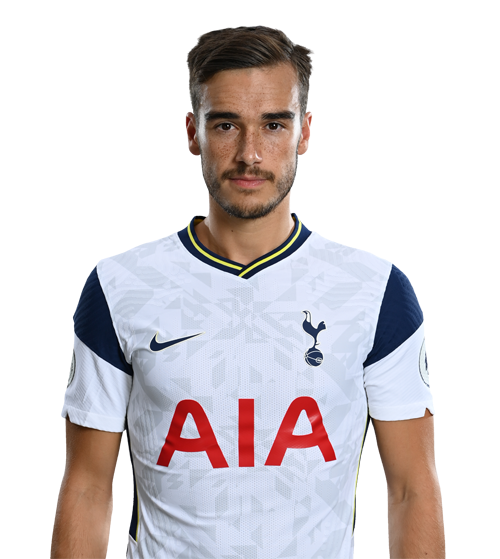
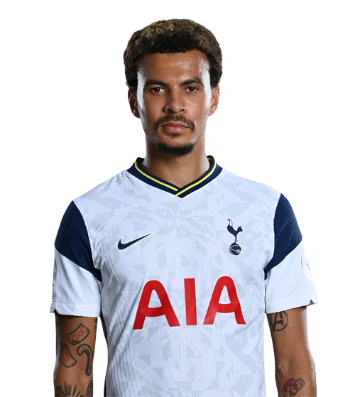
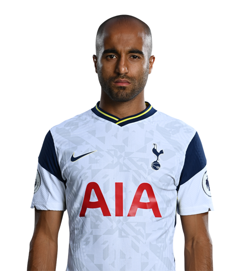

TOTTENHAM HOTSPUR
Tottenham Hotspur Stadium
hide
26 December 1986
Nice, France
close

16 January 1992
Dublin, Ireland
close

16 December 1996
Madrid, Spain
close

02 March 1989
Wilrijk, Belgium
close

05 August 1995
Copenhagen, Denmark
close

12 June 1996
Caloto, Colombia
close

08 July 1992
Chuncheon, South Korea
close

02 February 1996
Hemel Hempstead, England
close

28 July 1993
London, England
close
04 March 1992
Carapachay, Argentina
close
19 April 1987
Shrewsbury, England
close

15 January 1994
Cheltenham, England
close
16 August 1989
Le Blanc-Mesnil, France
close
09 April 1996
Rosario, Argentina
close

11 April 1996
Milton Keynes, England
close

08 October 1997
Amsterdam, Netherlands
close

24 December 1992
Ouragahio, Cote d'Ivoire
close

13 August 1992
São Paulo, Brazil
close

28 December 1996
Longjumeau, France
close
24 April 1993
Neath, Wales
close
© 2021 by ji-hoon all rights reserved.